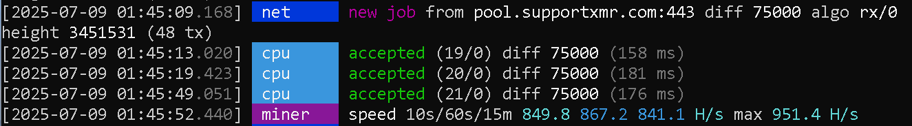

Às 01:45 do dia 09 de julho de 2025, este computador — com pouco mais de 850 H/s médios — registrou 3 hashes válidos consecutivos em uma pool pública, numa dificuldade de 75.000.

O que você vê acima não é simulação, nem sorte casual. É um daqueles raros momentos em que a estatística, apesar de fria, resolve permitir um milagre: três acertos legítimos em menos de um minuto. A máquina operava abaixo de 1000 envios por segundo (1KH/s), e ainda assim, acertou três vezes.
“É improvável, não impossível.” — O universo
Para os curiosos da matemática, vamos a uma estimativa crua:
Com uma taxa de aproximadamente 850 hashes por segundo
e dificuldade de 75.000,
a chance de encontrar um share válido em qualquer tentativa é cerca de 1 / 75.000.
Isso significa, na prática, um hash aceito a cada ~88 segundos em média.
Agora, considere isso acontecendo três vezes em sequência,
dentro de uma janela de menos de 60 segundos.
Essa configuração nos joga direto no domínio das caudas da distribuição de Poisson,
onde os eventos são raros e aleatórios, mas ainda assim possíveis.
Em termos grosseiros, estamos falando de uma probabilidade na ordem de 10⁻¹⁵.
Tão baixa quanto encontrar uma agulha num palheiro.
Mas — e isso é importante — não é zero.
Retorne à página principal para a reflexão completa sobre mineração e aleatorieade.